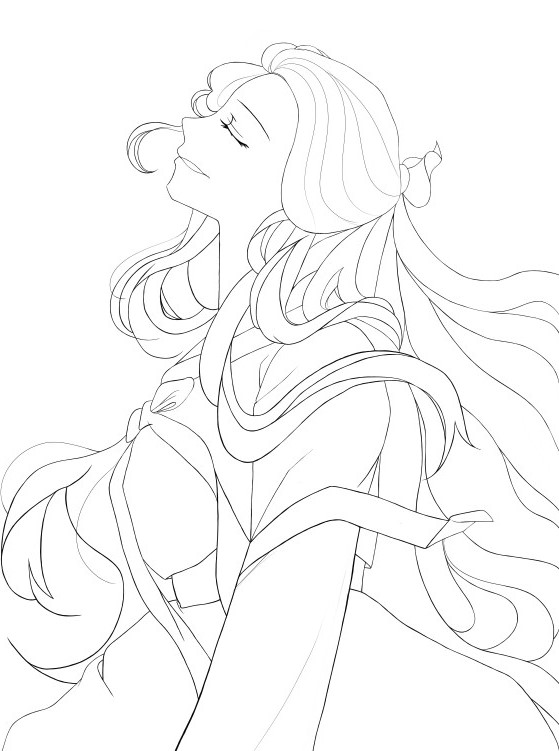
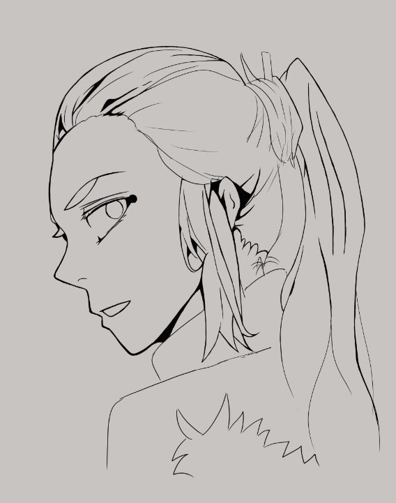
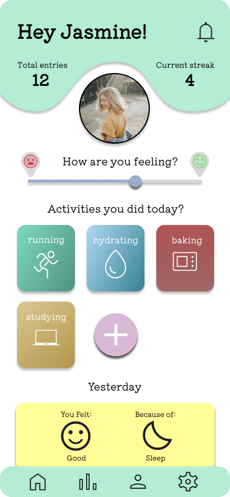

This is a black and white digital fan art work done did back in 2022. It was mostly focused on the clean lines to emphasis the elegance of the whole piece.

This image is also a black and white art piece, also done back in 2022. This is one of my
first pieces after starting digital art. Some lines are thicker than others, but it draws
out the engery in the piece, which makes it nice to look at.

This is a design I created for an organization, Chinese Student Association, on campus.
I used Adobe Photoshop to add all the elements together.

Another design for the same organization, with the keeping concept of lively and comfortableness in mind.

The most recent design I created for the same orgnization. I tried keeping it minimalistic, while adding
designs that would fit with the whole piece.

The idea behind this piece is finding your true self, from the movie "Your Name." I took 3 different images
and combined them using Adobe Photoshop. This was a project done in my
principles of visual design class.

A mock up screen for a mood tracking app create using Figma. I wanted the screen to be simple to look at
and also easy to navigate. This was another project for my principles of visual design class.

This design was focusing on typhography. The message of this design was hope, designed as a concert poster for
my favorite k-pop group. I created this in using Figma for my principles of visual design class.